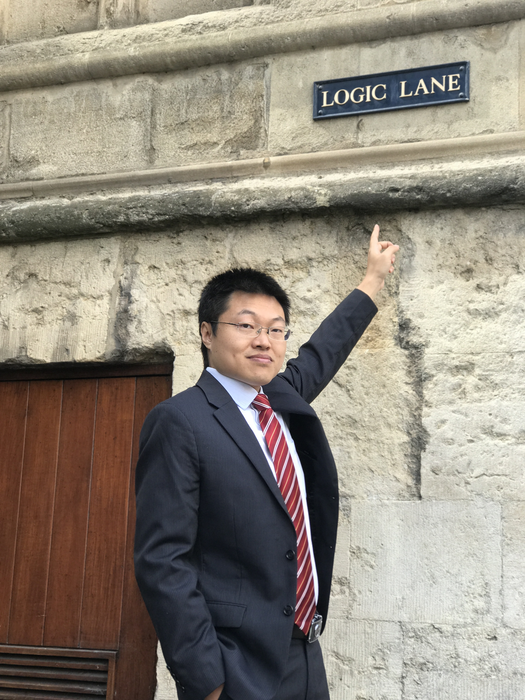

徐召清 XU ZHAOQING
四川大学哲学系教授、博士生导师、博士后合作导师。研究聚焦于哲学逻辑、形式知识论、逻辑哲学与人工智能哲学。
简介ABOUT
徐召清，1985年生，四川资阳人。北京大学哲学学士，北京大学逻辑学专业哲学博士（硕博连读）。美国纽约市立大学和英国牛津大学访问学者。四川大学逻辑、科学与文化研究所执行所长，《逻辑与批判性思维》副主编。四川省海外高层次留学人才、四川省学术和技术带头人后备人选、四川省“天府青城计划”天府社科菁英、四川大学青年杰出人才培育项目、四川大学双百人才工程等人才项目入选者。主要学术兼职：中国逻辑学会常务理事；四川省逻辑学会代理会长。
近期研究兴趣：（1）知识优先认识论的哲学逻辑基础、跨学科应用与跨文化反思；（2）比较逻辑学视域下的逻辑与元逻辑关系；（3）当代逻辑与人工智能哲学前沿问题；（4）基于概率的不确定性推理及其应用；（5）具身人工智能的认知科学哲学基础。
招生寄语PROSPECTIVE STUDENTS
欢迎具有逻辑学、分析哲学、数学、计算机、人工智能和认知科学等相关的学科背景的海外名校博士申请逻辑学或科学技术哲学专业的博士后合作项目。欢迎具有上述相关学科背景、知识基础和能力特长的学生申请逻辑学或科学技术哲学专业的博士或硕士研究生项目。
经历EXPERIENCE
工作经历
- 2024.9 – 至今四川大学哲学系教授、博士生导师、博士后合作导师
- 2021.6 – 2024.9四川大学哲学系副教授、博士生导师
- 2019.6 – 2021.6四川大学公共管理学院哲学系副教授、硕士生导师
- 2018.9 – 2019.9英国牛津大学访问学者（合作导师：Timothy Williamson 教授）
- 2017.9 – 2019.6四川大学公共管理学院哲学系副教授
- 2012.7 – 2017.9四川大学公共管理学院哲学系讲师（兼任系主任助理、党支部书记）
教育经历
- 2010.9 – 2011.8美国纽约市立大学（CUNY）联合培养博士生、访问学者（合作导师：Rohit Parikh 教授）
- 2007.9 – 2012.7北京大学哲学系，逻辑学硕博连读，哲学博士（导师：陈波 教授）
- 2005.9 – 2007.7北京大学政府管理学院，行政管理，辅修
- 2003.9 – 2007.7北京大学哲学系，科学哲学与逻辑学，哲学学士（导师：叶峰 教授）
研究RESEARCH
哲学逻辑 Philosophical Logic
以模态逻辑、认知逻辑与二维语义学为主要工具，处理知识、信念、必然性等基本哲学概念的逻辑结构。代表性工作涉及克里普克的信念之谜、意外考试悖论以及二维语义学的嵌套问题。
形式知识论 Formal Epistemology
聚焦于知识的限度与认知透明性问题，尤其关注威廉姆森知识理论中“认知透明性”论证的局限，并从“可错性”出发为理解知识的基始性与认知边界提供替代性分析框架。
逻辑哲学 Philosophy of Logic
考察逻辑的规范性基础、逻辑常项的意义以及逻辑与理性行动之间的关系，同时关注逻辑思想史中的关键转折与分析哲学传统中逻辑方法的应用与反思。
人工智能哲学 Philosophy of AI
将形式知识论的洞见延伸至人工智能的认知透明性问题，探讨机器认知的可错性、可解释性及其哲学预设，在逻辑与AI的交叉地带开展探索性研究。
论著PUBLICATIONS
著作与译著
- 《众妙之门：逻辑学基础与应用》（教材，主编），四川大学出版社，即将出版。
- 《知识及其限度》（全新译本），[英]威廉姆森 著，中国人民大学出版社，即将出版。
- 《苏格拉底式的问答法》（合译），[芬]亨迪卡 著，中国人民大学出版社，即将出版。
- 《哲学的哲学》（合译），[英]威廉姆森 著，商务印书馆，即将出版。
- 《我如何做哲学》（合译），[英]威廉姆森 著，江苏人民出版社，2026。
- 《哲学的困惑》（合译），[美]克里普克 著，上海人民出版社，2024年。
- 《分析哲学的故事》（合译），广西师范大学出版社，2023年。
- 《哲学的方法：蒂莫西·威廉姆森北大讲演录》（主编，第一译者），中国人民大学出版社，2023年。
- 《悖论：根源、范围及其消解》（第二译者），中国人民大学出版社，2021年。
- 《分析哲学——批评与建构》（合著），中国人民大学出版社，2018年。
- 《分析哲学——回顾与反省》（第二版，合译），中国人民大学出版社，2018年。
- 《逻辑与哲学的交融》（合译），社会科学文献出版社，2018年。
- 《对与错的真相——四人对话录》（译著），上海人民出版社，2017年。
- 《简明逻辑学导论》（第10版，合译），世界图书出版公司，2010年。
代表性学术论文
- 知识限度的逻辑分析，《江淮论坛》，2024年第5期，50-57页。人大复印资料《逻辑》全文转载，2025年第3期。CSSCI
- 如何理解知识的基始性？《自然辩证法研究》，2022年第9期，3-11页。《高等学校文科学术文摘》学术卡片，2022年第6期。CSSCI
- 新中国以来我国西南地区逻辑教育发展研究——以四川大学为例（合著），《逻辑学研究》，2022年第6A期，79-91页。CSSCI
- The Nesting Problem of Two-Dimensional Semantics, The Philosophical Forum, 2021, 52(2): 177-183. A&HCI
- 书评：蒂莫西·威廉姆森，《作为形上学的模态逻辑》，《哲学与文化》，2020年第8期，117-122页。 A&HCI
- On the Factivity Problem of Epistemic Contextualism. In Liao B., Wáng Y. (eds) Context, Conflict and Reasoning. Springer, 2020, pp. 63-74.
- 容差性、模糊性和连锁悖论，《哲学门》（第38辑），2019年，249-264页。CSSCI
- A Solution to Kripke's Puzzle about Time and Thought, The Philosophical Forum, 2019, 50(2): 239-244. A&HCI
- Epistemic Logic with Evidence and Relevant Alternatives. In Outstanding Contributions to Logic: Jaakko Hintikka on Knowledge and Game-Theoretical Semantics, Springer, 2018, pp. 535-555.（第一作者）
- 克里普克的信念之谜，《哲学门》（第35辑），2017年，209-223页。CSSCI
- 知识的事实性：预设vs.语用隐含，《湖北大学学报》（哲学社会科学版），2017年第4期，22-29页。CSSCI
- 克里普克论意外考试悖论，《河南社会科学》，2016年第8期，71-76页。人大复印资料《逻辑》全文转载，2017年第1期。CSSCI
- Williamson's Challenges to the A Priori-A Posteriori Distinction, The Philosophical Forum, 2016, 47(3-4): 309-324. A&HCI
- On Kripke's Dogmatism Paradox: A Logical Dynamical Analysis, Frontiers of Philosophy in China, 2015, 10(2): 298-310.
- 克里普克的时间与思想之谜，《湖北大学学报》（哲学社会科学版），2015年第3期，32-37页。CSSCI
- 认知疑难及其解决，《哲学门》（第23辑），2011年，295-318页。人大复印资料《逻辑》全文转载，2012年第1期。CSSCI
项目PROJECTS
主持科研项目（部分）
- 国家社科基金重点项目
- 四川省社科基金重点项目
- 成都市哲学社会科学规划年度项目
- 四川大学“从0到1”创新研究项目
- 四川大学青年杰出人才培育项目
- 国家社科基金青年项目
- 四川大学创新火花重点项目
参与国家级/省部级重大项目（部分）
- 教育部哲学社会科学研究重大课题攻关项目
- 国家社科基金重大项目
- 国家社科基金重大项目
- 国家社科基金重大项目
- 国家社科基金重点项目
教学TEACHING
先后主讲《逻辑学基础》《逻辑学导论》《数理逻辑》《哲学逻辑》《人工智能哲学》《逻辑与批判性思维》《悖论研究》等10多门本、硕、博专业和通识课程。主持本科和研究生教改项目4项。主持四川大学通识教育核心课程及配套精品在线课程《理性之道：逻辑学思想与历程》。参与马克思主义理论研究和建设工程重点教材《逻辑学》（第三版）修订。
主持教学改革项目（部分）
- 四川大学通识教育核心课程建设项目：《众妙之门：逻辑学基础与应用》（已结项）
- 四川大学哲学系高水平在线课程建设项目：“理性之道：逻辑学思想与历程”（15万，已结项）
- 四川大学研究生教学改革研究重点项目：“科教融合培养哲学创新人才的研究与实践”（已结项）
- 四川大学立项建设教材项目：《众妙之门：逻辑学基础与应用》（在研）
奖项与荣誉AWARDS & HONORS
科研获奖
- 四川省第二十次社会科学优秀成果三等奖（独立，2025）
- 北京市第十六届哲学社会科学优秀成果二等奖（排名第四，2021）
- 四川大学哲学社会科学优秀成果奖（2020）
- 四川大学哲学社会科学重要成果奖（2019）
- 四川大学“好未来”优秀学者二等奖（2019）
- 四川大学“五粮春”青年社科之星（2019）
- 四川大学优秀人文社科人才奖（2019）
教学获奖
- 四川大学姜维平优秀教学奖“课程建设奖”（2026）
- 四川省优质研究生课程（负责人，2025）
- 四川大学研究生教学成果一等奖（2025）
- 四川大学第九届教师教学创新竞赛（正高组）优胜奖（2026）
- 四川大学优秀本科毕业论文一等奖指导教师（2023）
- 四川大学课堂教学质量优秀奖（2022）
- 四川大学拔尖创新人才培养优秀指导教师（2020、2021、2022）
- 四川大学本科教学质量优秀奖（2021）
- 四川大学优秀本科毕业论文二等奖指导教师（2017）
荣誉与人才计划
- 四川省“天府青城计划”天府社科菁英（2021）
- 四川省第十三批学术和技术带头人后备人选（2021）
- 四川省海外高层次留学人才（2020）
- 四川大学第十一批“双百人才工程”（2024）
- 四川大学青年杰出人才培育项目（2023）
公共服务与学术服务SERVICE
学术组织与期刊
- 中国逻辑学会常务理事、四川省逻辑学会代理会长、中国现代外国哲学学会知识论专业委员会常务理事、中国辩证唯物主义研究会社会认识论专业委员会常务理事、中国人工智能学会终身会员。
- 《逻辑与批判性思维》副主编；《哲学评鉴》编委（2020–2023）；《社会科学研究》青年编委。
- 《哲学研究》《逻辑学研究》《哲学与文化》《自然辩证法通讯》、Frontiers of Philosophy in China 等期刊审稿专家。
公共服务与学术活动
- 曾任四川大学哲学系学分制导师、玉章书院驻院导师、逻辑学硕士点负责人、哲学强基计划执行主任。
- 主办/主持“逻辑、科学与文化”高端论坛、全国现代逻辑学术会议、逻辑理性与互动国际会议（LORI-XI）等；长期主持“逻辑、认知与互动”系列讲座。
- 国家社科基金评审专家、教育部重要人才计划评审专家、四川省哲学社会科学基金评审专家。